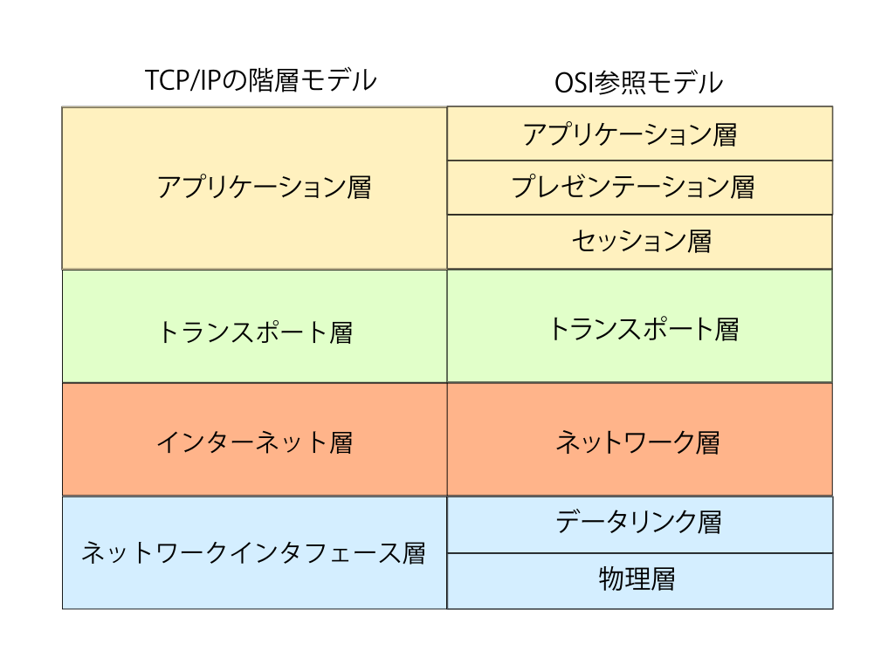
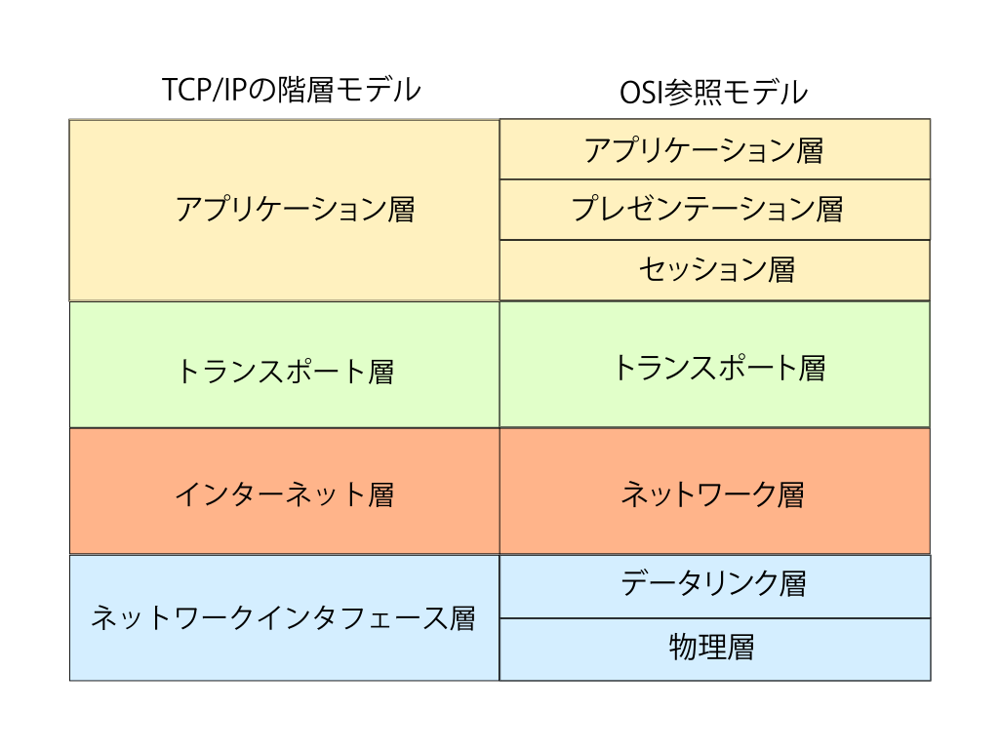

1_インターネットで通信をするためには、プロトコルが必要である。インターネットを運用するためのプロトコルがTCP/IPである。
OSI参照モデルとは
通信の機能を７つの層に分類したモデルである。
2_物理層と
データリンク層、
TCP/IPではネットワークインタフェース層にあたる。
物理層は、データの0や1を電圧や光のパルスに変換して通信媒体に流す。
データリンク層は直接接続された機器同士で通信を行えるようにする。
3_ネットワーク層、
TCP/IPではインターネット層にあたる。
ネットワーク層は、送信元から最終的な受信先まで間に様々なネットワークが存在していてもデータを送り届ける役割をもつ。送信元から受信先までの間の通信は
データリンク層が制御する。
4_トランスポート層(OSIモデル)は、データ送受信の準備であるコネクションの確立をする。
TCP/IPと同じ名称であるが、役割は完全に同じではない。
トランスポート層(TCP/IP)は、
トランスポート層(OSIモデル)の上位層である
セッション層の役割も行う。
セッション層、
プレゼンテーション層、
アプリケーション層は、
アプリケーション層(TCP/IP)にまとめられる。
これらの上位層は、電子メールなどのアプリケーションを実現し、アプリケーションのデータをネットワーク共通のデータ形式に変換し、下位層に渡す役割をもつ。
 
